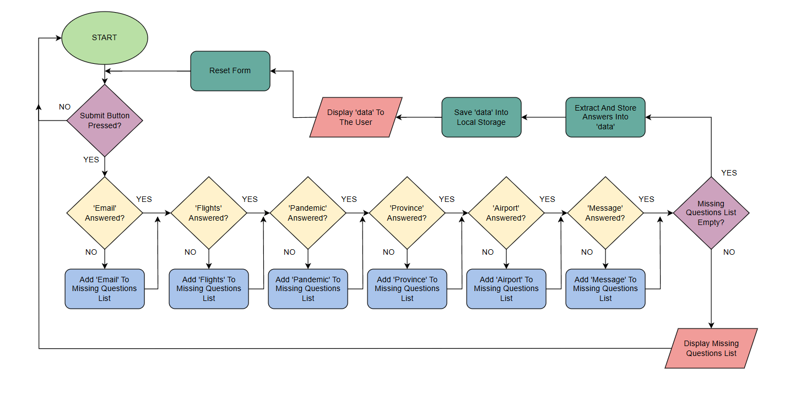
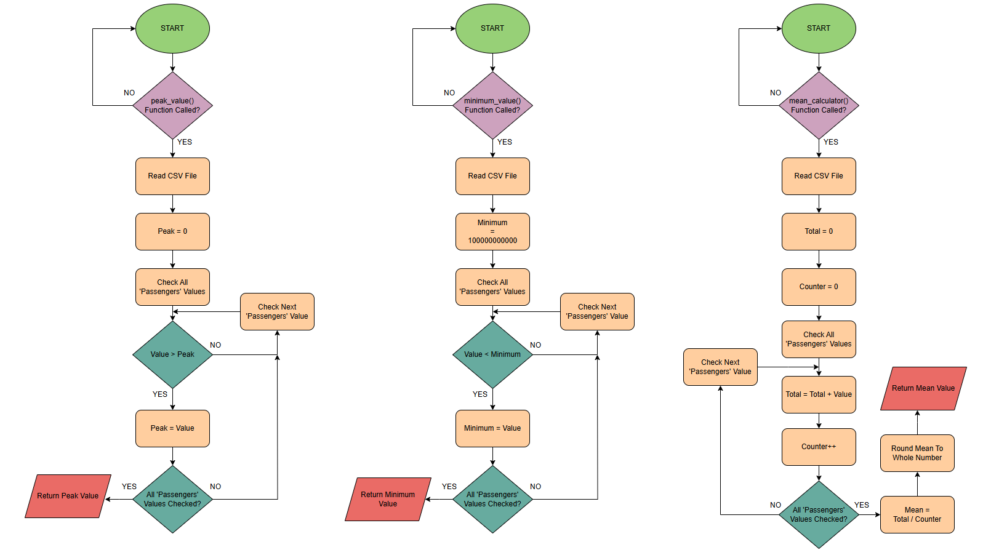
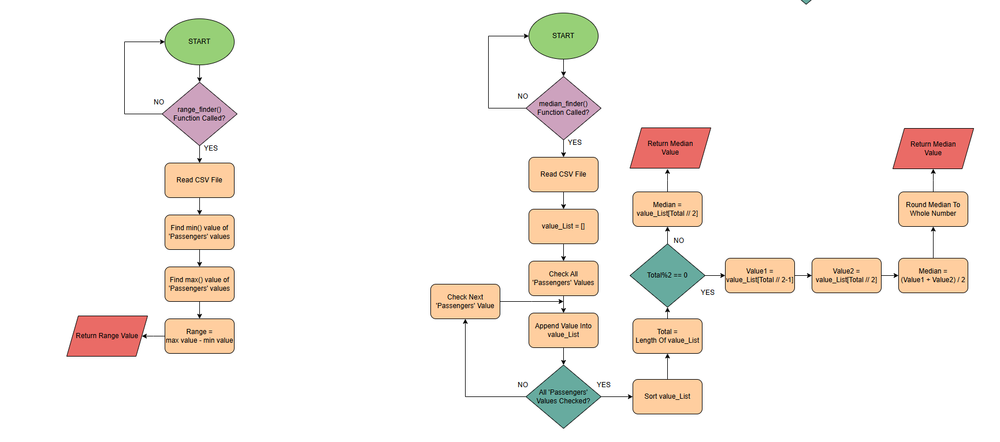
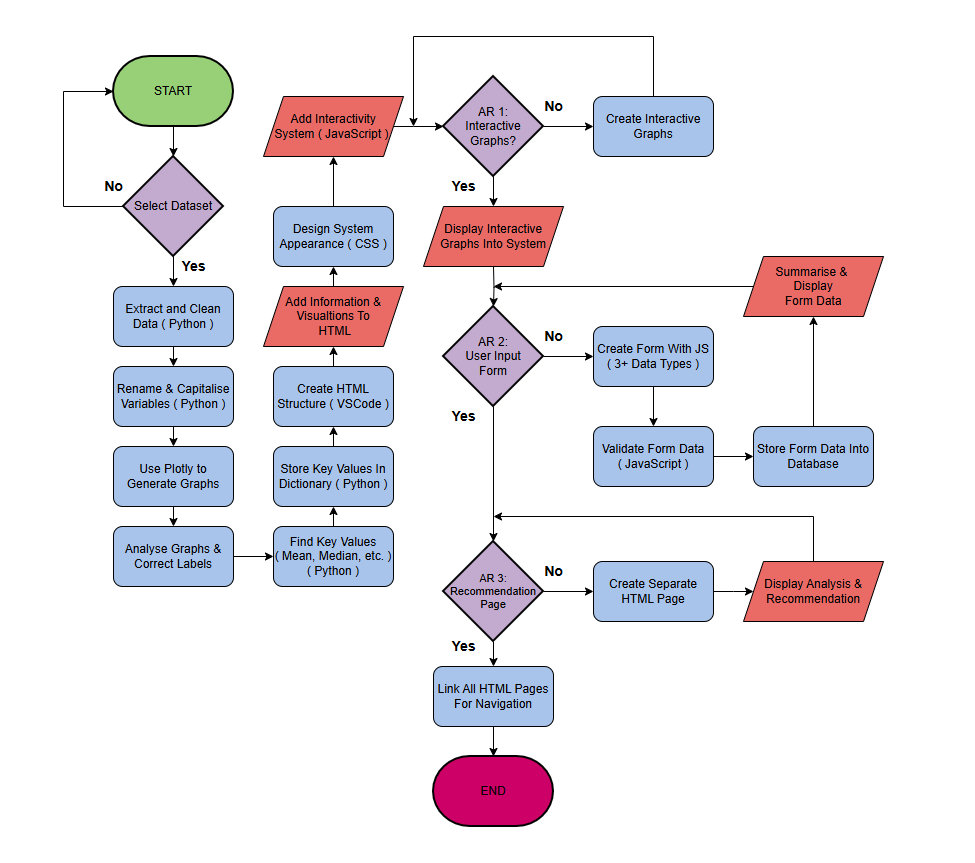
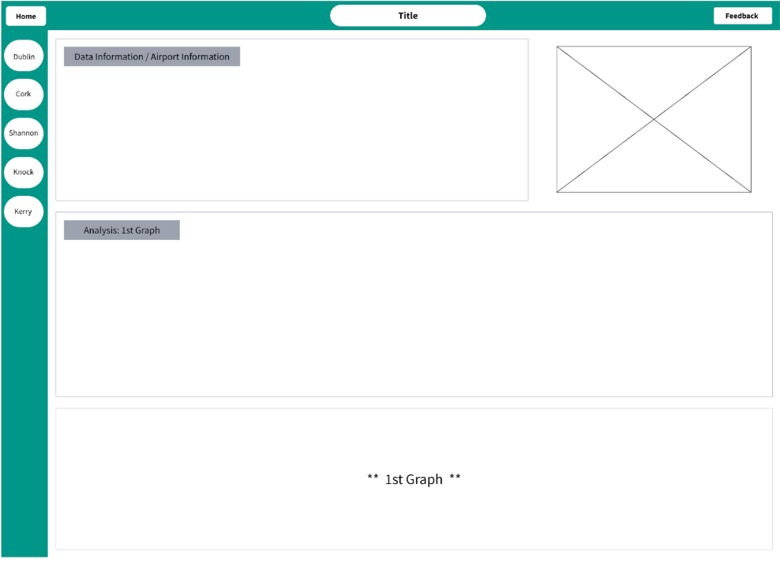
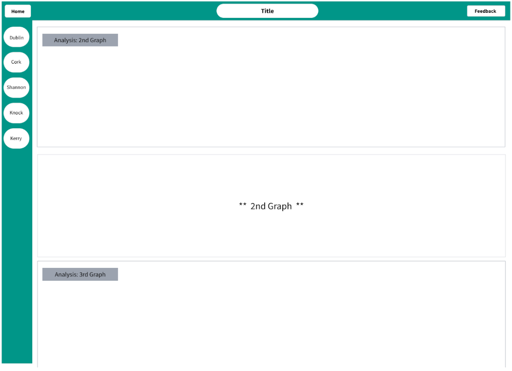
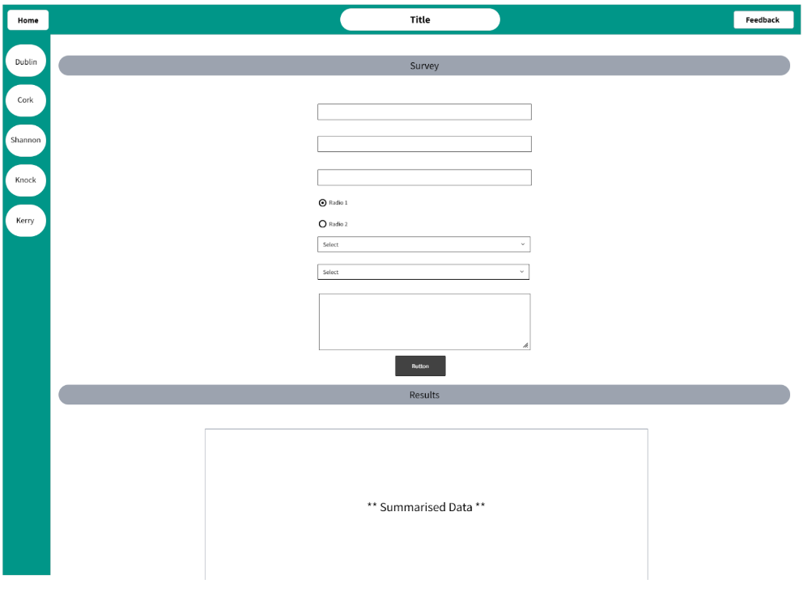

Design (400 words)
Project Design
My project will be designed to display information and graphs based on my chosen dataset. The user will be able to navigate and interact with the system, and view all the necessary information.
To achieve this, I will use HTML, CSS, and JavaScript to create a presentable system to the user. Python will be used to extract and store specific information, and to perform dataset analytics which will form graphs that will be presented onto the system.
Brief Requirements
BR 1 - After finding a suitable dataset from a reliable source, I will use Python to clean the dataset from unnecessary information and make it easier to use.
BR 2 - Using Plotly in Python, graphs can be generated with the dataset variables. I will analyse each graph and ensure all labels are correctly placed. I will use functions to find key values, like Max, Mean, Median, etc. which I will store into a dictionary.
BR 3 - On VSCode, I will use HTML to input information and visualisations onto the system, and CSS to design the appearance. JavaScript will be used to make the system interactive and dynamic.
AR 1 - Using Plotly in Python, I can make the graphs to be interactive by allowing the user to highlight legends and hover for details, including an animated graph.
AR 2 - Using JavasScript, I will present a form that will ask the user questions on at least 3 different data types. The data will be checked for missing values and stored. The summarised data will then be displayed on the website.
AR 3 - By creating a separate HTML file, I will display information based on what I’ve learned from analysing my dataset, then my recommendations at the bottom.
Technology / Software Used
Thonny was used as my programming platform for Python. I chose Python because it is capable of using a variety of libraries for data analysing and visualisation, and its suitability for web development.
Pandas was used to extract, clean, and store my dataset. Using Plotly in Python I created a variety of visualisations for analysis and presentation on my website.
VS Code was used as my web development platform. This allowed me to use HTML, CSS, and JavaScript. HTML and CSS allowed me to input my information and visualisations on my system and make them look presentable to the users. JavaScript added interactive features to the system and handled validation of the form inputs, ensuring good quality data.
Form Validation Flowchart

Algorithms Flowchart


Requirements Flowchart

Website Wireframes



Design Principles